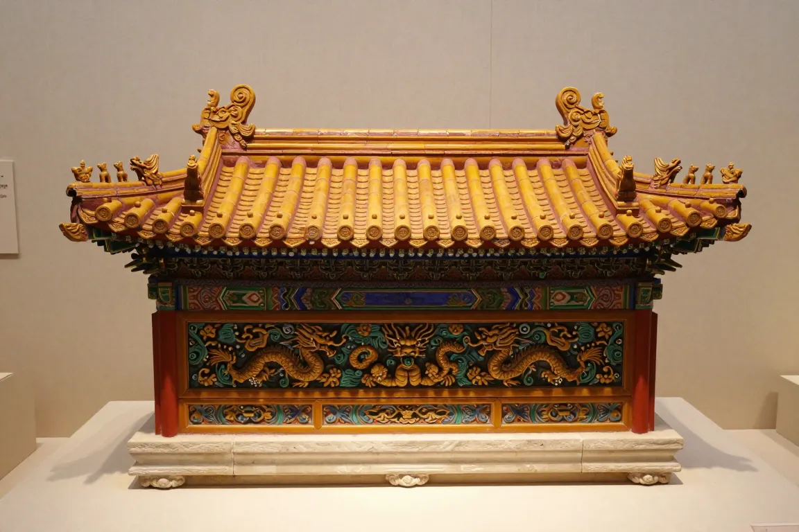

Глазурованная кровельная плитка жёлтого, зелёного и синего цвета, которую императорские печи делали для дворцов и храмов Пекина. Цвет определяют ранг и смысл: императорский жёлтый покрывает главные залы Запретного города.

Главная идея
Кровельная плитка — знак ранга: её цвет, фигуры на коньке и изогнутая линия говорят зрителю, какой зал принадлежит императору.
Принципы дизайна
Глазуруйте главные залы жёлтым, дома князей зелёным, а Храм Неба синим.
Покрывайте крышу полукруглыми и плоскими плитками рядами и заканчивайте карниз круглой плиткой-диском.
Ставьте ряд глазурованных зверей на каждое рёбро ската; берите до 9 фигур для высшего зала.
Формуйте каждую деталь конька, навершие и дракона в форме и глазуруйте цветом крыши.
Загибайте карнизы вверх на углу, чтобы линия плитки следовала мягкой S-кривой.
Прессуйте плитку из тонкой чистой глины и обжигайте дважды: голой и со свинцовой глазурью.
Стройте глазурованную стену-экран из формованных рельефных плиток, как Стена девяти драконов.
Антипаттерны
Матовая серая или коричневая кровельная плитка без глазури